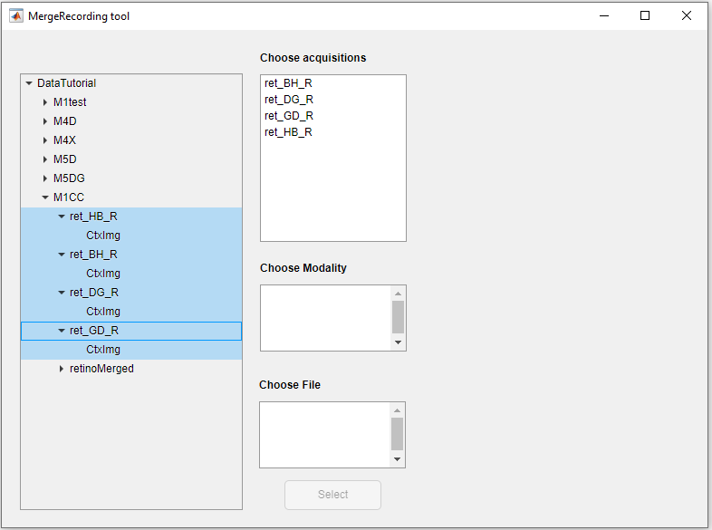
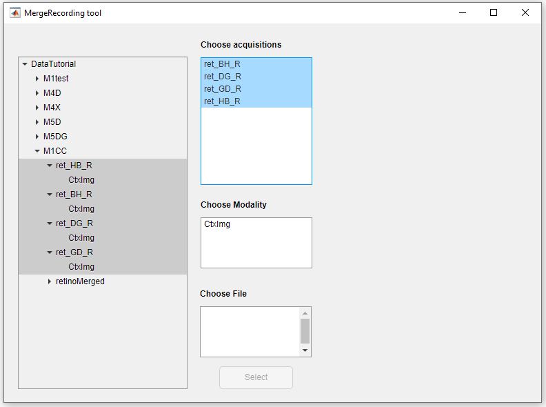
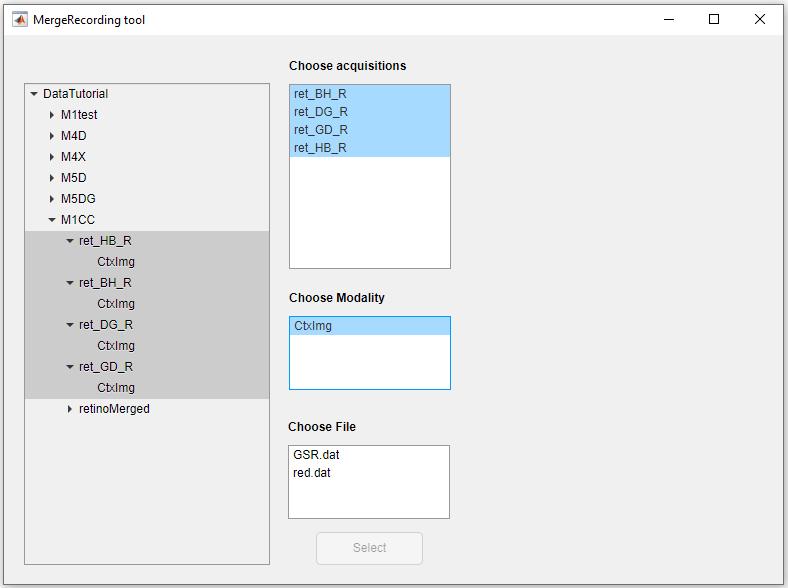
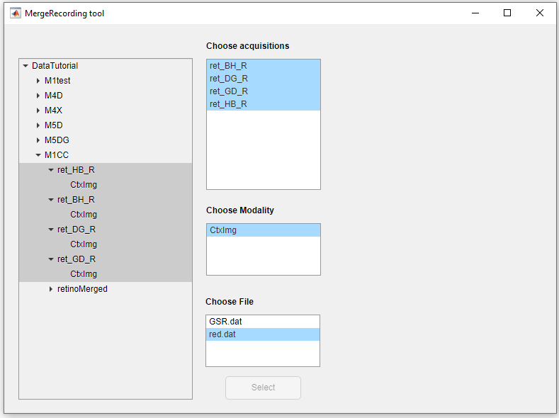
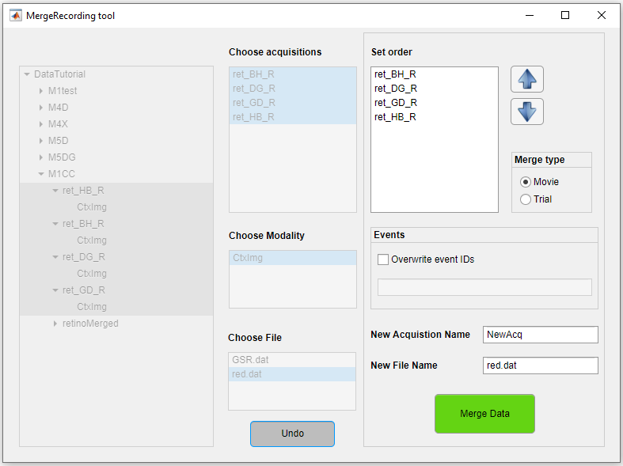
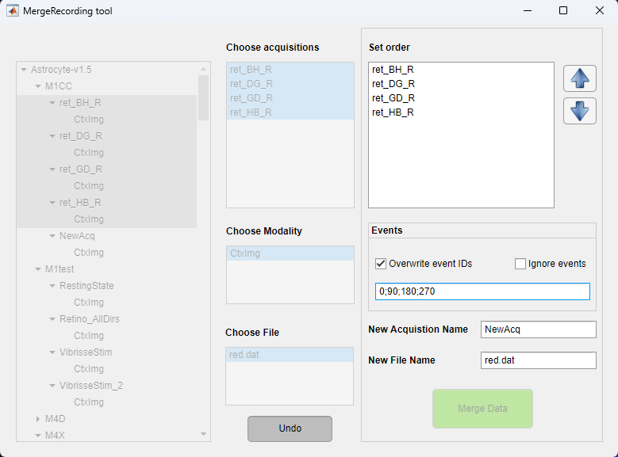
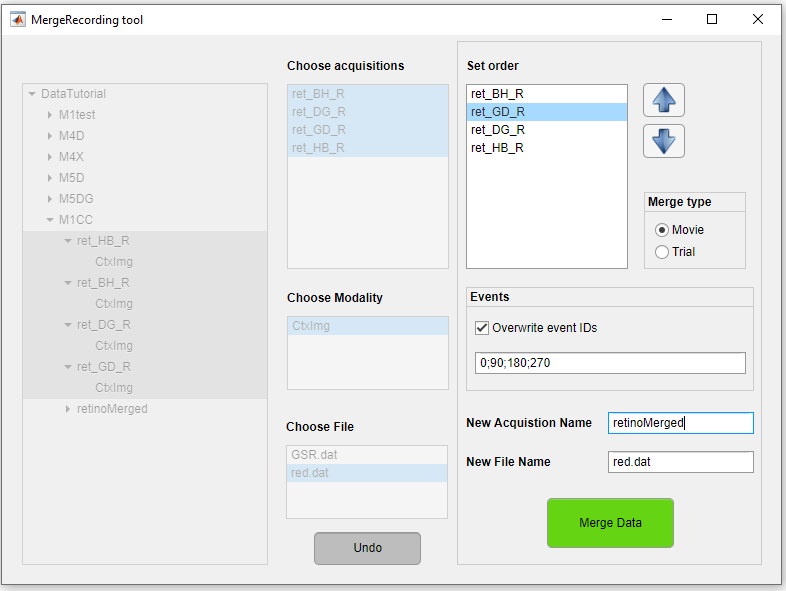
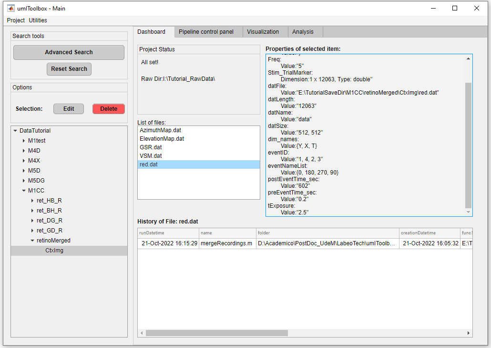

This tool is a part of the umIToolbox app. It allows the concatenation of two or more recordings in the time domain or as trials.
This tool accepts only imaging data that have the same frame size (i.e. same Y,X dimension sizes). For the concatenationa as trials, the size of the time dimension of the first recording will be the size of each trial. It is assumed that all recordings have the same number of frames or the difference is negligible.
First of all, open the umIToolbox app and load a project file. Once the file is loaded, go to Utilities >> Merge Recordings to launch the tool. The list of objects from the umIToolbox app will appear in the tool. Thus, you can optionally filter the object tree before opening the tool.
Select the objects containing the recordings in the object tree (left). Here, you can select several acquisitions from one or more subjects. The recordings will be merged across different acquisitions from one subject at a time.

Once the objects are selected, the acquisitions are listed in the "Choose acquisitions" list box. If two or more subjects are selected, only the acquisitions that exist in all subjects will appear in this list. Highlight the acquisitions containing the data to be merged.

Now, select the modality containing the recording to be merged. Here, only one modality will be allowed to be selected.

Here, all files that exist in the selected modality folder of all selected acquisitions will be displayed. Select the file to be merged and click on the "Select" button.

Once the "Select" button is pushed, a panel will appear with the options to merge the data. In the "Set order" list box, click on the individual acquisition names and use the arrows to reorder the list. The data will be merged in the top-down order of the list.

Select the type of merge in the merge type panel.
This tool provides two types of merge: movie or trial. The movie type consists of the concatenation of the data in the time domain. Whereas the trial type considers the data as trials and concatenate them in the Event dimension. For instance, for image time series with dimensions Y,X,T concatenated as trials, the resulting file will have the dimensions E,Y,X,T where the length of E is the number of files.
In the Events panel, you can check the box Overwrite event IDs to add identifiers to mark the frames from the original acquisitions in the merged file. Sometimes this information is necessary for the analysis. For instance, in the example depicted here, the recordings must have a specific identifier encoding the direction of a visual stimulus. Write the new indentifiers separated by ";".

Note
If there are triggers already stored in the data's meta data file, they will be automatically concatenated. In this case, to preserve this information, leave the box unchecked.
Note
A new events.mat file will be created when:
Type the name of the acquisition that will contain the merged file. If the acquisition already exists, the merged file will be stored in the modality folder inside it. Then, type the name of the merged file.

Finally, click on the Merge Data button to merge the data. This tool uses the mergeRecordings.m function to execute the merging.
Once finished, either close the tool or go back to merge another file. Once the tool is closed the project file is automatically saved and the object tree is updated.
